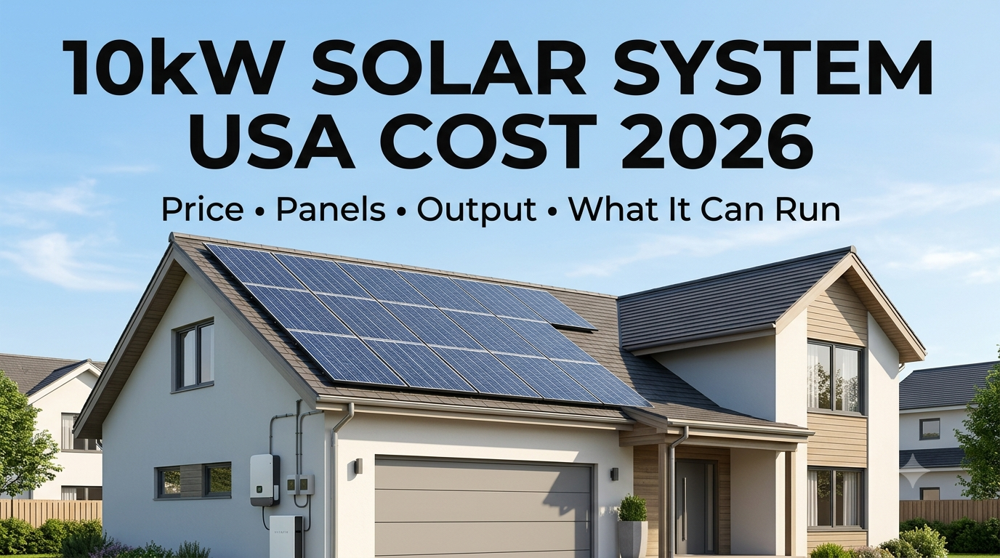

SolarRateHub
SolarRateHubUSA SOLAR SYSTEMS · August 31, 2026
10kW Solar System Cost in the USA 2026: Price, Panels, Output & What It Can Run
If you're considering solar for a larger home, a 10kW solar system is one of the most useful sizes to research. It can provide substantial electricity production for a higher-consumption household, but the final project price depends on the panels, inverter, roof, electrical work, labor, permits and whether battery storage is included.

How Much Does a 10kW Solar System Cost in the USA?
A 10kW system isn't simply the price of 10,000 watts of solar panels. A complete residential project can include the solar array, inverter, racking, wiring, electrical work, permits, inspection, monitoring and professional installation.
For a realistic comparison, homeowners should compare complete installed proposals rather than looking only at panel or inverter prices. Local labor, roof complexity, permitting, electrical upgrades and equipment selection can create large differences between quotes.
What Does a 10kW Solar System Include?
- Solar panels with combined nameplate capacity around 10kW
- Solar inverter or hybrid inverter system
- Roof or ground-mount racking
- DC and AC wiring and electrical protection
- Monitoring equipment
- Permits, inspection and commissioning
- Professional installation
- Possible electrical service or panel upgrades
How Many Solar Panels Do You Need for 10kW?
The number of panels depends on individual panel wattage.
| Panel Wattage | Approximate Panels for 10kW |
|---|---|
| 400W | 25 |
| 450W | 23 |
| 500W | 20 |
| 550W | 19 |
| 600W | 17 |
| 630W | 16 |
Using sixteen 630W panels gives a nominal array size of approximately 10.08kW. Actual electricity production will vary with sunlight, orientation, shading, temperature, system losses and other site conditions.
How Much Electricity Can a 10kW Solar System Produce?
A 10kW solar array does not produce 10kW continuously. Output changes throughout the day and across the year.
Location matters enormously. A 10kW system in a high-sun region can produce more annual energy than the same-sized system in a region with less solar resource. When comparing installer proposals, focus on estimated annual production in kWh, not just the system's 10kW label.
What Can a 10kW Solar System Run?
A 10kW system can support a substantial household load, but whether it can run several large appliances simultaneously depends on inverter capacity, appliance efficiency, startup surges and whether battery storage is available.
Potential household loads include:
- Refrigerator
- LED lights
- Ceiling fans
- Internet equipment
- Television
- Washing machine
- Water pump
- Microwave
- Electric iron
- Air conditioners
The important distinction is between solar array size and usable AC output. The inverter determines how much AC power the home can receive at a given moment.
10kW Solar System With Battery Storage
A battery is optional for many grid-connected installations, but it changes how solar energy can be used. Excess daytime production can charge the battery and stored energy can later support evening loads or selected circuits during a grid outage.
Battery storage can provide:
- Backup power during outages
- More nighttime use of solar energy
- Peak-hour energy shifting where utility rates make it valuable
- Greater energy independence
Battery costs should be compared separately because capacity, backup hardware and electrical integration can substantially change the project price.
What Kind of Inverter Does a 10kW System Need?
The inverter converts DC electricity from the solar array into AC electricity used by the home. Homeowners may consider grid-tied, hybrid or off-grid inverter configurations depending on their goals.
If battery backup is important, a compatible hybrid inverter can simplify integration. Compare inverter power rating, MPPT limits, battery compatibility, warranty and backup capability—not just the advertised price.
Explore the Solar Inverter Rates hub for model-level information.
How Much Roof Space Does a 10kW System Need?
Panel wattage affects how many modules are needed. Sixteen 630W panels require fewer modules than twenty-five 400W panels, but usable roof area also depends on setbacks, vents, chimneys, skylights, fire-access rules and roof orientation.
An installer should confirm roof condition and usable area before giving you a final system design.
Can a 10kW Solar System Eliminate Your Electric Bill?
It can significantly reduce electricity purchases, but a solar system does not automatically make every household bill zero. Your result depends on annual consumption, solar production, utility rates, fixed charges, export compensation and when your home uses electricity.
Net-metering and other utility rules vary by location. Check the current rules for your utility before purchasing.
Why Does a 10kW System Cost More in Some States?
Solar is a local market. Labor, permitting, roof conditions, utility interconnection requirements, installer competition, weather exposure and equipment availability can all affect the final price.
Incentives can also vary by state and utility and may change over time. Always verify current eligibility rather than assuming an online incentive applies to your project.
How to Compare 10kW Solar Quotes
- Confirm system size. Make sure every proposal is actually around 10kW.
- Compare annual production. Review estimated kWh.
- Check the inverter. Compare model, capacity, warranty and compatibility.
- Identify excluded costs. Ask about permits, electrical upgrades, monitoring and structural work.
- Separate battery pricing. Compare solar-only and solar-plus-storage proposals independently.
- Review warranties. Panel, inverter, workmanship and battery coverage can differ.
- Get everything in writing. Compare written proposals rather than verbal estimates.
Is a 10kW Solar System Worth It in 2026?
For a home with substantial electricity consumption and a suitable roof, a 10kW system can be a strong fit. The better question is whether its expected annual production matches your home's electricity needs and whether the installed price produces acceptable long-term economics.
Start with your previous twelve months of electricity use, compare several local proposals and check the complete project scope before signing a contract.
Bottom Line
A 10kW solar system cost in the USA in 2026 may be roughly $20,000–$30,000 as a broad planning range, but actual prices can be lower or higher. Panels, inverter, installation, roof conditions, electrical work, local market conditions and battery storage all matter.
Use online pricing as a research starting point, then verify current local pricing with written installer proposals.
Frequently Asked Questions
How much does a 10kW solar system cost in the USA in 2026?
A broad planning range is about $20,000–$30,000 before considering applicable incentives. Actual installed prices vary by location, equipment, roof and electrical requirements.
How many panels make a 10kW solar system?
It depends on panel wattage. At 400W, approximately 25 panels are needed. At 630W, approximately 16 panels produce about 10.08kW of nominal capacity.
Does a 10kW solar system include a battery?
Not necessarily. Battery storage is normally a separate component and adds cost based on capacity and backup requirements.
Will a 10kW system run my whole house?
It depends on your simultaneous load, inverter capacity, appliance efficiency and whether battery storage is available. Large loads such as air conditioners can materially change the calculation.
Questions & Comments
Related SolarRateHub Guides
Solar Panel Prices · Solar Inverter Rates · Solar Battery Prices · Solar System Prices · Solar Calculator
Disclaimer
All prices and production references in this article are educational planning estimates, not supplier quotations. Actual costs vary by state, installer, equipment, roof, electrical work, permitting, taxes, incentives and project design. Verify current local pricing and incentive eligibility before purchasing.
Have a question or suggestion? Ask about 10kW solar pricing, panel quantity, batteries, appliances or anything you'd like SolarRateHub to cover next.